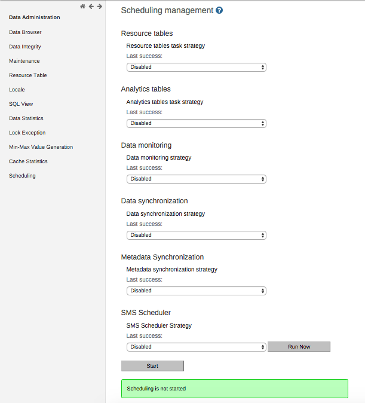
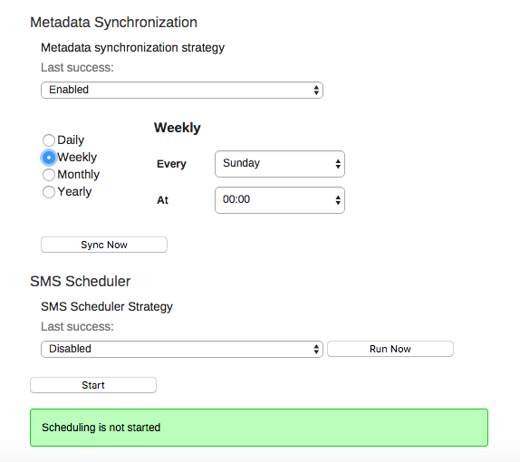

The analytics, resource tables, data sync, metadata sync and data mart can be automatically scheduled to run on regular intervals. Simply select the aggregation period types, organisation unit group set aggregation level, and strategy to configure how the scheduled job should run. If you are using surveillance rules, you can choose to run them "All daily" by selecting this option.
Pressing "Start" will enable the scheduled job to run at a pre-determined time (always at midnight based on the server time).
|  |
Starting 2.24 you can also schedule metadata synchronization on regular intervals. Simply select "Enabled" from the drop-down, select the time-period during which you want to run the task. Pressing "Start" will enable the scheduled job to run at that specific time selected.
|  |
As depicted in the screenshot, you can select the time period as daily, weekly, monthly or yearly.
Daily: On selecting this checkbox, you will need to select the time at which it needs to run daily.
Weekly: On selecting this checkbox, you need to select the day of the week and time on that day on which it needs to run.
Monthly: On selecting this checkbox, you need to select a day of the week, say Every 1st Sunday, Every 2nd Saturday, etc. and time on that day on which it needs to run.
Yearly: On Selecting this check box, you need to select the month, specific day of the month and time on that day on which it needs to run.
There is also the capability for running the meta data synchronization immediately. Using "Sync Now" button you can run the meta data synchronization task immediately even if the scheduler is scheduled to run at specific time or not.
If the scheduler is already enabled, you will see the "Sync Now" button on the page itself.
If the scheduler is not enabled, simply select "Enabled" from the drop-down for Metadata Synchronization and click "Sync Now" button.